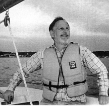

Please note: the AAS Obituaries are temporarily being hosted on this website while their full content is being ingested into the PubPub publishing platform newly adopted by the Bulletin of the American Astronomical Society. When the migration is complete, your existing links will take you to the final, migrated content. Contact peter.williams@aas.org with any questions.
James B. Willett (1940-1998)
James B. Willett was an outstanding scientist and administrator as well as a dear friend and colleague. He was a native of Lexington, Kentucky, where he was born in 1940, and earned his BS degree in physics and astronomy from the University of Kentucky in 1962.
He went on to graduate school at Indiana University, where he earned both his MS (1964) and PhD (1969) degrees in physics. His thesis research involved garnma- and beta-ray spectroscopy using high resolution germanium detectors and advanced computer techniques. Jim's research included precision parameterization of beta-decay spectra for determining end point energies, and the development of experiments and analytical techniques to measure internal conversion coefficients in nuclear decays.
Following his PhD, Jim was awarded a National Research Council postdoctoral fellowship under Albert E. Metzger at the Jet Propulsion Laboratory. In 1973 he became a permanent member of the JPL staff working in nuclear astrophysics under Allen S. (Bud) Jacobson. Jim first became involved in early studies on the use of X-ray diffraction to investigate the composition of extraterrestrial bodies, a technique that will soon be implemented on planetary landers and rovers to determine surface mineralogy. During his postdoctoral tenure at JPL, Jim found the opportunity to apply his experience in nuclear spectroscopy to the search for gamma-ray line emission of cosmic origin.
He led the development and use of a large gamma-ray telescope employing a germanium crystal array for use on high altitude balloons. Beginning in 1971, Willett organized and led several balloon campaigns to Palestine, Texas and Alice Springs, Australia, during which he measured spectra from objects including the Crab Nebula, Cygnus X-1, and the Galactic Center. He later used data from an orbiting gamma-ray spectrometer to make high resolution measurements of nuclear line emission produced by cosmic rays hitting the earth's upper atmosphere. In 1980, Jim transferred to the Galileo project at JPL, where he was responsible for science operations. He next led the development of generic science operation systems for experiments on planetary missions, greatly reducing the burden on individual experimenters and the costs of developing custom systems for each.
In 1990, Jim moved to NASA Headquarters in Washington, DC, where he applied his exceptionally broad background in space research to the management of the Missions Operations and Data Analysis Program in Space Physics. He took this job very seriously and always made certain he understood the areas of research that he supported and funded. He had an exceptionally high level of credibility and honesty which led the scientific community to trust him as one of the NASA managers who truly understood the needs of the scientists and did his utmost to satisfy them. Outside his professional life, Jim loved sailing and yacht racing, which he began in college and enthusiastically continued for the rest of his life. He was also a pilot and an amateur astronomer, who owned a 12-inch telescope which he enjoyed sharing with his friends. Jim died at his home in Clarksville, Maryland on 19 June 1998, following a brief battle with brain cancer. Of his many admirable characteristics, perhaps the most remarkable is exemplified by the way he lived after being diagnosed with terminal cancer: always positive, never complaining, and not showing the slightest hint of bitterness concerning his fate. He is truly a role model in an era where such people seem rare. Jim is survived by Lin, his wife of 27 years, and three daughters, Theresa Willett of Boston and Jessie Wyant and Hallie Rose of Dallas.
Photo courtesy of William Mahoney.
Obituary written by: William A. Mahoney (Jet Propulsion Laboratory)
BAAS Citation: BAAS, 1999, 31, 1611
SAO/NASA ADS Bibcode: 1999BAAS...31.1611M